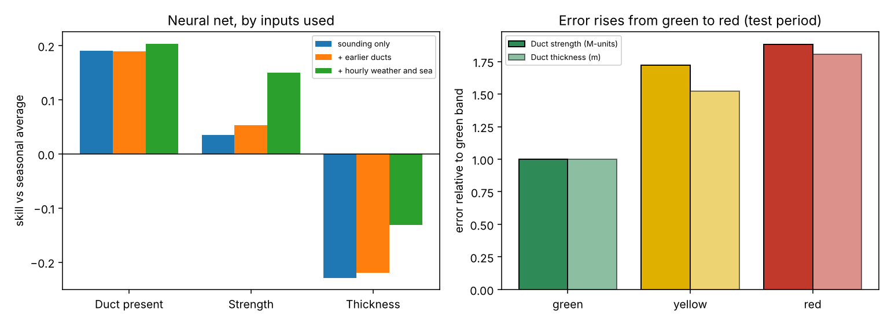
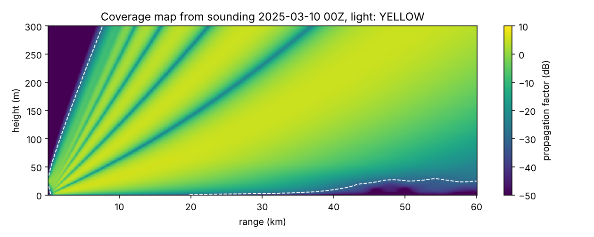

Featured project · UC San Diego i4NS · 2026
Navy Atmosphere Radar Forecaster
Under the Radar — atmospheric duct prediction, radar propagation modeling, and offline learning.
Why I built it
Atmospheric conditions can bend and trap radio waves, changing how radar signals propagate. Twice-daily weather-balloon soundings leave a gap between observations. In UC San Diego’s Innovating for National Security (i4NS) program, I built a prototype to estimate the next sounding’s duct state from the latest observations and indicate when a radar coverage map may need updating.
Explore the public GitHub repository · Read the operator guide
What I built
- NOAA data pipeline: scheduled ingestion of radiosondes, airport weather, and coastal sea-temperature observations, with integrity checks and warnings for stale or incomplete data.
- Atmospheric prediction: neural-network and gradient-boosting models estimate duct presence, strength, and thickness using soundings, weather, sea temperature, and recent trends.
- Radar propagation: a TENG-style neural-network solver and a numerical reference solver produce range-height propagation maps. A separate model estimates how stale a coverage map has become.
- Reliability indicators: green, yellow, and red signals show when an estimate warrants caution or the full simulation should be rerun.
- Offline retraining: operators can validate, train, and predict from their own CSV data locally, without sharing it. The public demonstration uses synthetic operator data.
Built with Python, NumPy, pandas, scikit-learn, SciPy, and Matplotlib; designed to run on ordinary CPU hardware.
Results reported in the repository
The San Diego evaluation trains on observations before 2021, calibrates on 2021, and tests on 2022 onward. Predictions are evaluated 0, 3, 6, and 9 hours before observed soundings.
- Duct presence Brier score
- 0.133
- Strength RMSE
- 15.3 M-units
- Thickness MAE
- 67.9 m
For comparison, the seasonal baseline scores 0.167, 16.6 M-units, and 69.4 m, respectively; keeping the last sounding scores 0.234, 17.8 M-units, and 82.7 m. Lower is better for each metric. The gains over the seasonal baseline are modest, especially for thickness.

Example propagation map

Scope and next steps
No Navy data was used. The public project uses NOAA observations, synthetic operator examples, and its own numerical reference solver. It has not been validated against a Navy simulator or deployed operationally.
The propagation model assumes a horizontally uniform atmosphere along one radial, uses placeholder radar settings, and cannot resolve thin evaporation ducts from the coarse radiosonde profiles. The TENG-style solver is slower than the numerical solver in this prototype; it does not demonstrate a speed advantage. A San Diego model did not transfer to Abu Dhabi, supporting the need for regional retraining.
Next steps are to validate against the intended simulation, confirm operational requirements, replace placeholder settings, and evaluate regional data through the offline workflow.